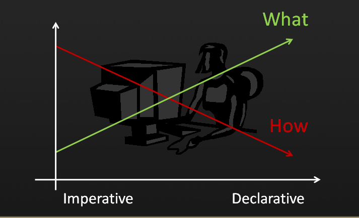
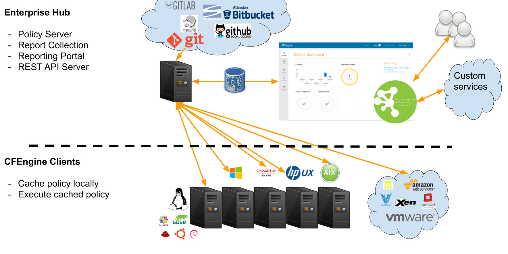
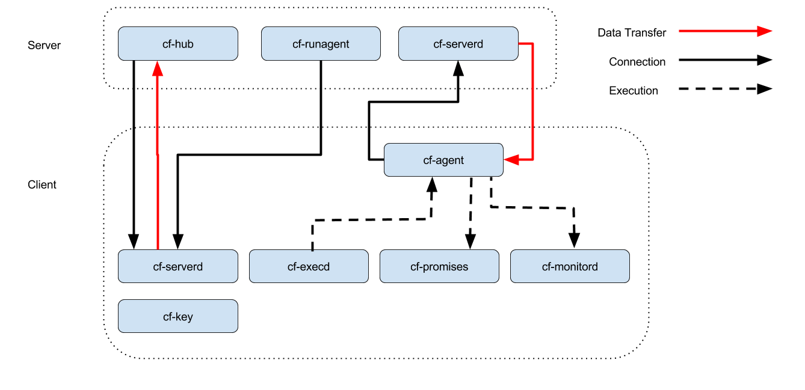
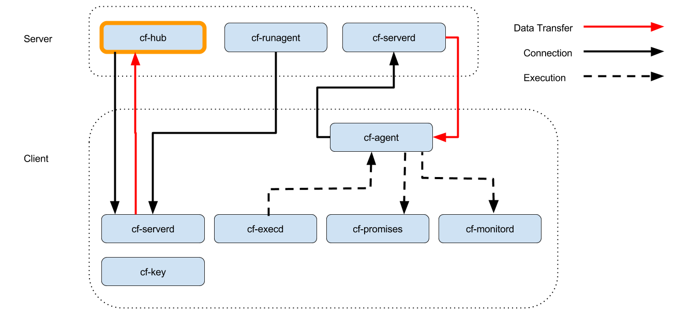
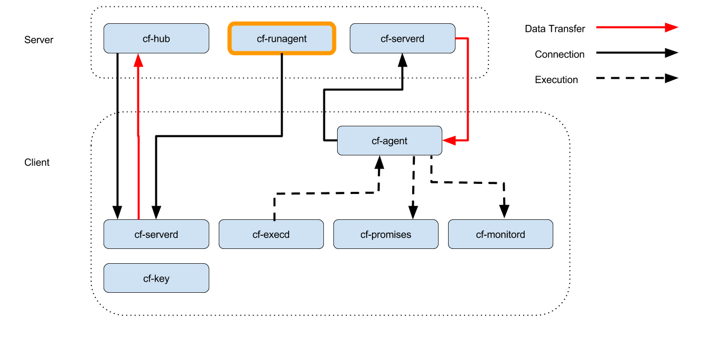
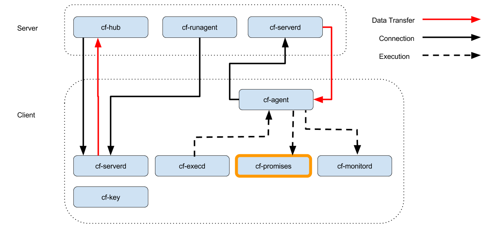
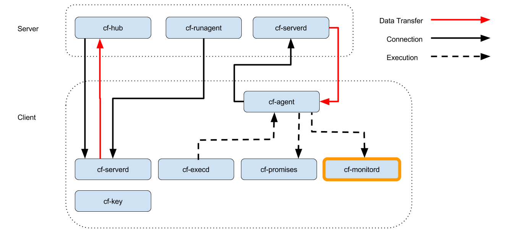
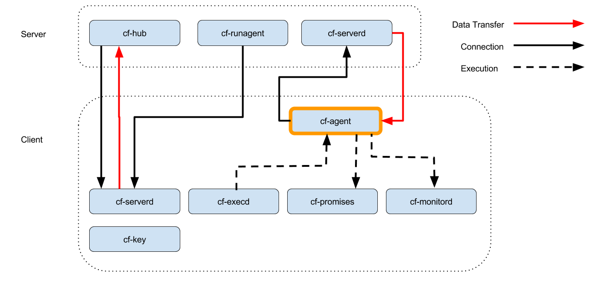
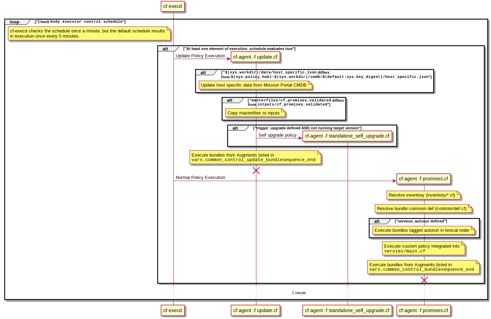
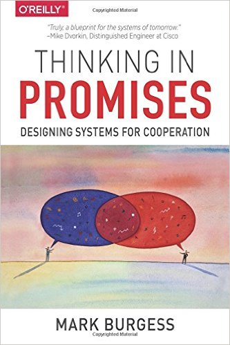

CFEngine in a day
Before we start
Schedule
| Time | Activity |
|---|---|
| 09:00 AM - 10:30 AM | Class |
| 10:30 AM - 11:00 AM | Morning break |
| 11:00 AM - 12:30 PM | Class |
| 12:30 PM - 01:30 PM | Lunch break |
| 01:30 PM - 03:00 PM | Class |
| 03:00 PM - 03:30 PM | Afternoon break |
| 03:30 PM - 05:00 PM | Class |
Use the source
Hi, I'm Nick
- Wife, 2 kids and a dog
- Sysadmin/Infrastructure Engineer/Doer of things
- CFEngineering for >10 years
- Find me online
Who are you?
- Name
- Role
- Goals for this training
What this training covers
- What is CFEngine
- High level architecture overview
- Language fundamentals (through CFEngine 3.15.0)
- Examples and Exercises
- Useful tooling and tips
Why Automation?
Every time someone logs onto a system by hand, they jeopardize everyone's understanding of the system. – Mark Burgess
What is CFEngine?
- Modern
- Secure
- Scalable
- Agile infrastructure automation tool
History
- Written by Mark Burgess
- Originally released in 1993.
- Computer Immunology (Self Healing) 1998
- CFEngine 2 (1998)
- Promise Theory (2005)
- CFEngine 3 (2008)
- Company Founded (2008)
- CFEngine 3.15 (2019)
Small
As of Feb 2020:
- Lines of code ~ 115k
- ~ 6M Package size
- Memory Utilization: ~ 80MB
- cf-agent ~ 30MB
- cf-serverd ~ 30MB
- cf-execd ~10MB
- cf-monitord ~ 10MB
Secure
A good track record.
Portable
Known to run on many platforms, and interesting places.
Resilient & Autonomous
- Policy cached locally
- Decisions made locally
- Actions taken locally
- Convergence, repair what you can and revisit soon
Declarative
Focus on the desired end state

Declarative vs Imperative
bundle agent main | #!/bin/env/bash
{ | PKG="openssh-server"
packages: | rpm -q ${PKG} || yum install ${PKG}
"openssh-server" | yum check-update openssh-server
policy => "present", | if [ $? -eq 100 ]; then
version => "latest"; | yum upgrade openssh-server
} | fi
Typical use cases
- Any local resource/state
- Manage files, processes, commands
- Security Hardening
- Compliance
- Application Deployment/Management
- Inventory (with Enterprise)
Editions
Community (core)
wget -O- http://cfengine.package-repos.s3.amazonaws.com/\
quickinstall/quick-install-cfengine-community.sh | sudo bash
Enterprise Features
- Dashboard
- Alerts and Triggered Actions
- Inventory Reporting
- Change Reporting
- File Integrity Monitoring
- Measurements
- REST APIs
- SQL Reporting
- Single Pane of Glass Reporting
Enterprise
wget http://cfengine.package-repos.s3.amazonaws.com/quickinstall/\
quick-install-cfengine-enterprise.sh
sudo bash ./quick-install-cfengine-enterprise.sh <hub|agent>
Client/Server Architecture

Client Server Communications
- Utilizes port 5308
- Encrypted (TLS)
- Public key authentication
- Agents download policy from hub
- Hub downloads reports from remote agents
Agent Components
Agent Components

cf-hub

- Collects reports from remote agents
- Obeys "
common control" and "hub control" bodies
cf-runagent

- Requests invocation of cf-agent on remote hosts
- Cannot invoke arbitrary commands
- Define classes to modify behavior (
--define) - Specify bundlesequence (
--remote-bundles)
cf-serverd

- Listens for connections on TCP/5308
- Enforces access control and authentication
- Serves files
- Serves
cf-runagentrequests - Serves reports to
cf-hub - Runs on both server and clients
- Evaluates "
common" and "server" bundles - Obeys body "
server control"
cf-key

- Show recent connections
- Manage trust of public keys
- Generates key pairs
- Installs Enterprise License
cf-promises

- Checks Syntax
- Dump Syntax (
cf-promises --syntax-description - Tag Policy Releases (
cf-promises --tag-release) - Show first order Variables and Classes (
cf-promises --show-vars --show-classes
cf-monitord

- Measures things
- Defines
mon.*variables - Defines classes based on anomaly detection
- Evaluates "
common" and "monitor" bundles - Obeys "
common control" and "monitor control" bodies
cf-execd

- Executes
cf-agentperiodically - Controls period and splay time
- Collects, stores, and sends output
- Evaluates "
common" bundles - Obeys "
executor control" body
cf-agent

- The catalyst or instigator of change
- Evaluates "
agent" and "common" bundles - Obeys "
common control" and "agent control" bodies. - By default runs
$(sys.default_policy_path)- Privileged :
/var/cfengine/inputs/promises.cf - Unprivileged:
~/.cfagent/inputs/promises.cf
- Privileged :
Pop Quiz
- What needs to happen before remote agents can get policy from the hub?
- Where is the policy that the agent runs by default?
- What port needs to be open bidirectionally?
- How does information from client hosts get into the Enterprise Hub Database?
- What is the meaning of life, the universe and everything?
MPF & stdlib
The default "Masterfiles"
Overview
promises.cfupdate.cfstandalone_self_upgrade.cflib/*cfe_internal/*controls/*inventory/*templates/*
User Entries
def.json(Augments)services/*.cfservices/main.cfservices/autorun/*.cfCUSTOM_DIRECTORY/*.cf
Unattended Policy Execution Overview

Pop Quiz
- What is the MPF?
- Where do you configure most MPF tunables?
- When is the MPF typically upgraded?
Promise Theory
A model of voluntary cooperation between individual autonomous actors.
Promises
- A promise is a statement of intent
- Agents can only make promises about themselves

Basic Concepts
Language
Promise outcomes/results
keptrepairednot_keptfaileddeniedtimeout
Note: Compound promises can have multiple outcomes at the same time (not_kept & kept & repaired).
files: "/mnt/volume/file.txt" create => "true", perms => m( 777 ), edit_line => lines_present( "Hello World $(sys.date)" ), edit_defaults => empty;
Promise types
access, build_xpath, classes, commands, databases, defaults, delete_attribute, delete_lines, delete_text, delete_tree, field_edits, files, guest_environments, insert_lines, insert_text, insert_tree, measurements, meta, methods, packages, processes, replace_patterns, reports, roles, services, set_attribute, set_text, storage, users, vars
Syntax Structure
bundle type name { promise_type: context:: "promiser" -> { "optional", "stakeholder" } attribute_1 => value_1, attribute_2 => value_2, meta => { "tag1", "tag2", "tag3=something" }, comment => "Why important"; } body attribute_N name(optional) { context:: attribute_N_1 => "value"; attribute_N_2 => { "value" }; }
Bundles
- Collection of logically related promises
- Can take parameters
- Maintain some variable state
- Can return values
- Are not functions
Example bundles hold some state
bundle agent main { methods: "" usebundle => set_item_in_bag( "hammer", "slightly damaged"); "" usebundle => set_item_in_bag( "pickaxe", "perfect"); "" usebundle => set_item_in_bag( "flask", "half full"); "" usebundle => report_bag_contents; reports: "$(with)" with => join( ", ", getindices( "set_item_in_bag.array" ) ); } bundle agent set_item_in_bag(item, value) { vars: "$(item)" string => "$(value)"; "array[$(item)]" string => "$(value)"; } bundle agent report_bag_contents { vars: "l" slist => variablesmatching("default:set_item_in_bag\..*"); "a[$(l)]" string => nth( string_split( "$(l)", "\.", 2 ), 1); reports:"You look in the bag and see ...."; "A $($(l)) $(a[$(l)])"; }
R: You look in the bag and see .... R: A slightly damaged hammer R: A perfect pickaxe R: A half full array[flask] R: A half full flask R: flask
Bundles for logical abstraction
For example, a bundle to configure Apache might:
- install the
apache2package - edit the configuration file
- copy the web server content
- configure file-system permissions
- ensure the httpd process is running
- restart the httpd process when necessary
Bundle types
cf-promises --syntax-description json | jq '.bundleTypes | keys[]'
Bundlesequence
mainis the default__main__is treated as main if in$(sys.policy_entry_filename)
bundle agent inventory_things { vars: "thing" string => readfile( "/tmp/thing", inf ), meta => { "inventory", "attribute_name=Inventoried Thing" }; } bundle agent __main__ { methods: "inventory_things"; }
Bodies
- Collection of attributes
- Have a type ( e.g.
classes,perms,copy_from) - Can take parameters
- Can be inherited (3.8+)
- Can be defaulted for a given promise type (3.9+)
There are 41 body types as of 3.15.0
cf-promises --syntax-description json | jq '.bodyTypes | keys |join(", ") '
acl, action, agent, changes, classes, common, contain, copy_from, database_server, delete, delete_select, depth_search, edit_defaults, edit_field, environment_interface, environment_resources, executor, file, file_select, hub, insert_select, link_from, location, match_value, monitor, mount, package_method, package_module, password, perms, printfile, process_count, process_select, rename, replace_with, report_data_select, runagent, select_region, server, service_method, volume
Special bodies that control agent behavior
- body common control
- body file control
- body agent control
- body server control
- body executor control
- body hub control
Default bodies
bundle agent main { files: "/tmp/show_default_action" create => "true"; "/tmp/show_explicit_action" create => "true", action => fix; } body action fix { action_policy => "fix"; } body file control { namespace => "bodydefault"; } body action files_action { action_policy => "warn"; }
warning: Warning promised, need to create file '/tmp/show_default_action' info: Created file '/tmp/show_explicit_action', mode 0600
Normal Order
- The order in which CFEngine executes promise types
- Classes then Vars are evaluated during policy parsing and pre-eval
- Promises are evaluated from top to bottom respecting class restrictions
- Bundles listed in the bundlesequence or activated via methods are given 3 pass evaluation
Example:
bundle agent illustrating_normal_order { vars: "color1" string => "red"; reports: "$(color1)+$(color2) = Purple"; vars: "color2" string => "blue"; }
# cf-agent --bundlesequence illustrating_normal_order --no-lock --log-level info --file illustrating_normal_oder.cf
info: Using command line specified bundlesequence
R: red+blue = Purple
bundle agent illustrating_normal_order { vars: "color1" string => "red"; "color2" string => "blue"; reports: "$(color1)+$(color2) = Purple"; }
# cf-agent --bundlesequence illustrating_normal_order --no-lock --log-level info --file illustrating_normal_oder2.cf
info: Using command line specified bundlesequence
R: red+blue = Purple
Augments (def.json)
- Very early definition
- Loaded if
def.jsonis found next to$(sys.policy_entry_filename) - Classes based on system discovery (platform/networks/arch)
- Variables defined in
defbundle scope
Example augments
{ "classes": { "by_regular_expression": [ "ubuntu_\\d+" ], "by_class_expression": [ "(Afternoon|Evening).(Monday|Wednesday|Friday)::" ], }, "vars": { "myvar1": "defined from augments", "myvar2": "defined from augments" } }
Example policy using augments
bundle agent main { reports: "I defined '$(const.dollar)(def.myvar1)' as '$(def.myvar1)'"; by_regular_expression:: "Define classes from augments based on a regular expression"; by_class_expression:: "Define classes from augments based on CFEngine class expressions"; }
Example output
cf-agent --no-lock --file ./examples/augments/augments.cf
R: I defined '$(def.myvar1)' as 'defined from augments' R: Define classes from augments based on a regular expression R: Define classes from augments based on CFEngine class expressions
Policy always wins!
bundle common def { vars: "myvar1" string => "Defined in policy"; "myvar2" string => "Defined in policy", if => not( isvariable( myvar2 ) ); } bundle agent main { reports: "I defined '$(const.dollar)(def.myvar1)' as '$(def.myvar1)'"; "I defined '$(const.dollar)(def.myvar2)' as '$(def.myvar2)'"; by_regular_expression:: "Define classes from augments based on a regular expression"; by_class_expression:: "Define classes from augments based on CFEngine class expressions"; }
Example output
cf-agent --no-lock --file ./examples/augments/augments-policy-wins.cf
R: I defined '$(def.myvar1)' as 'Defined in policy' R: I defined '$(def.myvar2)' as 'defined from augments' R: Define classes from augments based on a regular expression R: Define classes from augments based on CFEngine class expressions
Multiple augments
Merge more augments on top.
{ "vars": { "myvar1": "defined from augments for all", "myvar2": "defined from augments for all" }, "augments": [ "$(sys.policy_entry_dirname)/$(sys.os).json" ] }
{ "vars": { "myvar2": "override for linux hosts" } }
Multiple augments: Example policy
bundle agent main { reports: "'$(const.dollar)(def.myvar1)' is '$(def.myvar1)'"; "'$(const.dollar)(def.myvar2)' is '$(def.myvar2)'"; }
cf-agent --no-lock --file ./examples/augments-multiple/promises.cf
R: '$(def.myvar1)' is 'defined from augments for all' R: '$(def.myvar2)' is 'override for linux hosts'
Macros
- Prevent parsing
- Use for supporting future syntax, speed optimizations
minimum_version
bundle agent example_macro_minimum_version { @if minimum_version(4.0.0) This contains completely invalid syntax, but it's OK. Only versions 4 and greater will evaluate this section. @endif @if minimum_version(3.14.0) # the function `classfiltercsv()` was introduced in 3.14.0 vars: "container" data => classfiltercsv( $(file), # File true, # Has header 0, # Class column 2); # Optional sort column @endif }
feature
- Feature Macro documentation
You can conditionally parse policy based on compiled in features using this macro.
bundle agent main { @if feature(yaml) # the yaml library may not be compiled in vars: "container" data => parseyaml(' - array1 - array2 - key: 1 - key: 2'); @endif reports: "$(with)" with => string_mustache('{{%-top-}}', container ); }
Functions
There are 171 functions as of 3.15.0
accessedbefore, accumulated, ago, and, basename, bundlesmatching, bundlestate, callstack_callers, callstack_promisers, canonify, canonifyuniquely, changedbefore, classesmatching, classfiltercsv, classify, classmatch, concat, countclassesmatching, countlinesmatching, data_expand, data_readstringarray, data_readstringarrayidx, data_regextract, data_sysctlvalues, datastate, difference, dirname, diskfree, escape, eval, every, execresult, expandrange,
file_hash, fileexists, filesexist, filesize, filestat, filter, findfiles, findprocesses, format, getclassmetatags, getenv, getfields, getgid, getindices, getuid, getuserinfo, getusers, getvalues, getvariablemetatags, grep, groupexists, hash, hash_to_int, hashmatch, host2ip, hostinnetgroup, hostrange, hostsseen, hostswithclass, hubknowledge, ifelse, intersection, ip2host, iprange, irange, isdir, isexecutable, isgreaterthan, isipinsubnet, islessthan, islink, isnewerthan, isplain, isvariable,
join, lastnode, laterthan, ldaparray, ldaplist, ldapvalue, length, lsdir, makerule, maparray, mapdata, maplist, max, mean, mergedata, min, network_connections, none, not, now, nth, on, or, packagesmatching, packageupdatesmatching, parseintarray, parsejson, parserealarray, parsestringarray, parsestringarrayidx, parseyaml, peerleader, peerleaders, peers, processexists, product, randomint, read_module_protocol, readcsv, readdata, readenvfile,
readfile, readintarray, readintlist, readjson, readrealarray, readreallist, readstringarray, readstringarrayidx, readstringlist, readtcp, readyaml, regarray, regcmp, regex_replace, regextract, registryvalue, regldap, regline, reglist, remoteclassesmatching, remotescalar, returnszero, reverse, rrange, selectservers, shuffle, some, sort, splayclass, splitstring, storejson, strcmp, strftime, string_downcase, string_head, string_length, string_mustache, string_replace, string_reverse, string_split, string_tail, string_upcase, sublist, sum, sysctlvalue, translatepath, unique, url_get, usemodule, userexists, variablesmatching, variablesmatching_as_data, variance
Pop Quiz
- What is a bundle?
- What is the fundamental underlying philosophy that CFEngine is based on?
- When is the next break?
- Which component collects reports from remote agents?
- What types of bundles are there?
- In what order are promises within a bundle processed?
- How can you use new language features when you still have some old agents?
Making Decisions: Context Classes and Expressions
Classes
- Restrict promises based on context
- Usable in bundles and bodies
- Used for making decisions
- Can be combined with expressions
What classes are defined?
cf-promises --show-classes
cf-agent --show-evaluated-classes
vars: "defined" slist => classesmatching( ".*" );
Example
cf-promises --show-classes | tail -n+2 | awk -vORS=", " '{print $1}'
127_0_0_1, 172_17_0_1, 192_168_122_1, 192_168_42_189, 4_cpus, 64_bit, Afternoon, Day23, February, GMT_Day23, GMT_Evening, GMT_February, GMT_Hr18, GMT_Hr18_Q3, GMT_Lcycle_1, GMT_Min30_35, GMT_Min34, GMT_Q3, GMT_Sunday, GMT_Yr2020, Hr12, Hr12_Q3, Lcycle_1, Min30_35, Min34, PK_SHA_43c979e264924d0b4a2d3b568d71ab8c768ef63487670f2c51cd85e8cec63834, Q3, Sunday, Yr2020, any, cfengine, cfengine_3, cfengine_3_15, cfengine_3_15_0, common, compiled_on_linux_gnu, debian, debian_buster, enterprise, enterprise_3, enterprise_3_15, enterprise_3_15_0, enterprise_edition,
fe80__5ee0_c5ff_fe9f_f38f, feature, feature_curl, feature_def, feature_def_json, feature_def_json_preparse, feature_tls, feature_tls_1, feature_tls_1_0, feature_tls_1_1, feature_tls_1_2, feature_tls_1_3, feature_xml, feature_yaml, ipv4_127, ipv4_127_0, ipv4_127_0_0, ipv4_127_0_0_1, ipv4_172, ipv4_172_17, ipv4_172_17_0, ipv4_172_17_0_1, ipv4_192, ipv4_192_168, ipv4_192_168_122, ipv4_192_168_122_1, ipv4_192_168_42, ipv4_192_168_42_189, ipv4_gw_192_168_42_1, ipv6_fe80__5ee0_c5ff_fe9f_f38f, linux, linux_5_0_0_38_lowlatency, linux_x86_64, linux_x86_64_5_0_0_38_lowlatency, linux_x86_64_5_0_0_38_lowlatency__41_Ubuntu_SMP_PREEMPT_Tue_Dec_3_01_06_41_UTC_2019,
mac_02_42_fb_b7_c0_59, mac_52_54_00_6b_62_06, mac_5c_e0_c5_9f_f3_8f, my_other_example, net_iface_docker0, net_iface_lo, net_iface_virbr0, net_iface_wlan0, nickanderson_thinkpad_w550s, nova, nova_3, nova_3_15, nova_3_15_0, nova_edition, systemd, test_class_29665402e2b4331f10b8d767b512cd916eeb5db9, test_class_29665402e2b4331f10b8d767b512cd916eeb5db9_2, ubuntu, ubuntu_19, ubuntu_19_04, x86_64,
Class expressions
| . (dot) | AND |
| & (ampersand) | AND |
| l (pipe) | OR |
| ! (exclamation) | NOT |
| () (parenthesis) | grouping |
- It's more common to use
.than&to express AND
Example illustrating class expressions
bundle agent main { files: linux.(Sunday|Saturday):: "/etc/nologin" -> { "Human Resources" } create => "true", comment => "Disallow non-root logins on the weekend. We believe in work-life balance, and encourage it."; linux.!(Sunday|Saturday):: "/etc/nologin" -> { "Business Operations" } delete => tidy, comment => "People need to be able to log in for them to do their work during the week"; }
Class types
- Hard Classes
- Soft Classes
Hard classes
- Defined by agent
- Not configurable
- Always available
- Discovered each run
- Cannot be undefined
redhat, Thursday, linux
Soft classes
- Defined by policy
- Based on anything
- Available after definition
- Can persist for period of time
- Can be namespace or bundle scoped
- Can be undefined only as the result of a promise
Valid Class names
- Allowed characters include
[a-zA-Z0-9_] - Canonify a string to produce a valid class name
- Converts invalid characters to
_.
- Converts invalid characters to
- Automatically canonified when defined
Note: Classes are NOT automatically canonified when checked.
Example of automatic canonification
bundle agent main { vars: "my_class_name" string => "Invalid-Class/Name!"; "c_my_class_name" string => canonify( "$(my_class_name)" ); classes: "$(my_class_name)" expression => "any"; reports: "'$(my_class_name)' is **NOT** a class that is defined" unless => "$(my_class_name)"; "'$(c_my_class_name)' **IS** a defined class" if => canonify( $(my_class_name) ); }
R: 'Invalid-Class/Name!' is **NOT** a class that is defined R: 'Invalid_Class_Name_' **IS** a defined class
Class scope
- Namespace scoped classes are accessible from any bundle.
- Persist until end of agent run or explicitly undefined.
- Bundle scoped classes are only accessible from within the bundle the class was defined.
- All hard classes are namespace scoped
Class scope rules
| Bundle Type | Scope |
common |
namespace |
agent |
bundle |
classesbodies default to namespace scope
Pro Tip: Use bundle scoped classes whenever possible.
Define custom classes by expression
bundle agent main { classes: "weekend" or => { "Saturday", "Sunday" }; "weekday" not => "weekend"; "business_hours" expression => "weekday.(Hr9|Hr10|Hr11|Hr13|Hr14|Hr15|Hr16|Hr17)", comment => "Weekdays from 9-5 excluding the lunch hour."; "webserver" expression => regcmp( "www.*", $(sys.fqhost) ), comment => "Identify webservers based on their name"; "north_america" expression => iprange( "10.1.0.0/16" ); }
Define custom classes by promise outcome
bundle agent main { vars: "config[PermitRootLogin]" string => "no"; files: "/etc/ssh/sshd_config" edit_line => set_line_based("$(this.bundle).config", # Config MAP " ", # Separator "\s+", # Separator regex ".*", # Keys to consider "\s*#\s*"), # Lines to ignore classes => scoped_classes_generic("bundle", "sshd_config"); services: sshd_config_repaired:: "sshd" service_policy => "restart", comment => "For sshd to pick up changed config it must be restarted." }
Example - traditional class expressions
bundle agent main { reports: "Hello World!"; linux.!(Saturday|Sunday):: "This is a linux host."; "Today is not Saturday or Sunday."; }
R: Hello World! R: This is a linux host. R: Today is not Saturday or Sunday.
Example - restrict individual promises with if and unless
bundle agent main { vars: "platforms" slist => { "linux", "windows" }; reports: "I am a $(platforms) host" if => "$(platforms)"; # ifvarclass => "$(platforms)"; "I was made by Microsoft" unless => "!windows"; }
R: I am a linux host
Example - variable class expressions
bundle agent main { vars: "platforms" slist => { "linux", "windows" }; reports: !(Saturday|Sunday):: "It's a weekday and I am a $(platforms) host!" if => "$(platforms)"; "$(platforms)":: "I am a $(platforms) host and it's a weekday!" if => "!(Saturday|Sunday)"; }
R: It's a weekday and I am a linux host! R: I am a linux host and it's a weekday!
Functions that return "context"
cf-promises --syntax-description json | jq '.functions | \ with_entries( select(.value.returnType == "context") ) | \ keys | join( ", ")'
accessedbefore, changedbefore, classify, classmatch, every, fileexists, filesexist, groupexists, hashmatch, hostinnetgroup, hostrange, iprange, isdir, isexecutable, isgreaterthan, isipinsubnet, islessthan, islink, isnewerthan, isplain, isvariable, laterthan, ldaparray, none, processexists, read_module_protocol, regarray, regcmp, regextract, regldap, regline, reglist, remoteclassesmatching, returnszero, some, splayclass, strcmp, usemodule, userexists
Pop Quiz
- What types of classes are there?
- What is the difference?
- What are valid class characters?
- What is the default scope for classes defined as the result of a promise outcome using a classes body?
- What component serves policy files, which hosts can be a policy server?
Variables & Data Types
Variable Scoping
- All variables are globally accessible
$(variable),@(list or data container)- Use fully qualified variable names when accessing variables in other bundles.
$(bundle.variable),@(bundle.list)$(namespace:bundle.variable),@(namespace:bundle.list)
Datatypes
- string
- slist, ilist, rlist
- classic "array"
- data
Example - strings
bundle agent main { vars: "string1" string => "one"; "string2" string => "strings can be multi-line"; "string3" string => "with \"quotes\""; "string4" string => 'or "quotes"'; "string5" string => `with 'single' and "double" quotes`; reports: "string1 = '$(string1)'"; "string2 = '$(string2)'"; "string3 = '$(string3)'"; "string4 = '$(string4)'"; "string5 = '$(string5)'"; }
R: string1 = 'one' R: string2 = 'strings can be multi-line' R: string3 = 'with "quotes"' R: string4 = 'or "quotes"' R: string5 = 'with 'single' and "double" quotes'
Example - numbers
bundle agent main { vars: "var1" int => "1"; "var2" int => "10K"; "var3" real => "1.2"; "var4" real => "10e-5"; "var5" int => "inf"; reports: "var1 = '$(var1)'"; "var2 = '$(var2)'"; "var3 = '$(var3)'"; "var4 = '$(var4)'"; "inf = '$(var5)'"; }
R: var1 = '1' R: var2 = '10240' R: var3 = '1.200000' R: var4 = '0.000100' R: inf = '999999999'
Example - lists
bundle agent main { vars: "var1" ilist => { 1, 2, "3", "4" }; "var2" rlist => { "1.2", "2.0", "3.3" }; "var3" slist => { "one", "two", three, @(var1), @(var2), }; "var4" real => sum( var2 ); reports: "var1 = '$(var1)'"; "var2 = '$(var2)'"; "var3 = '$(var3)'"; "var4 = '$(var4)'"; }
R: var1 = '1' R: var1 = '2' R: var1 = '3' R: var1 = '4' R: var2 = '1.2' R: var2 = '2.0' R: var2 = '3.3' R: var3 = 'one' R: var3 = 'two' R: var3 = 'three' R: var3 = '1' R: var3 = '2' R: var3 = '3' R: var3 = '4' R: var3 = '1.2' R: var3 = '2.0' R: var3 = '3.3' R: var4 = '6.500000'
Example - list iteration (loops)
bundle agent main { vars: "numbers" slist => { "1", "2", "3" }; "colors" slist => { "red", "green", "blue" }; reports: "$(numbers)"; "$(colors)"; "$(numbers) with $(colors)"; "$(colors) with $(numbers)"; }
R: 1 R: 2 R: 3 R: red R: green R: blue R: 1 with red R: 1 with green R: 1 with blue R: 2 with red R: 2 with green R: 2 with blue R: 3 with red R: 3 with green R: 3 with blue R: red with 1 R: red with 2 R: red with 3 R: green with 1 R: green with 2 R: green with 3 R: blue with 1 R: blue with 2 R: blue with 3
Example - "Classic" Arrays
bundle agent main { vars: "file[motd]" string => "/etc/motd"; "file[fstab]" string => "/etc/fstab"; "file_idx" slist => getindices( file ); "files" slist => getvalues( file ); reports: "The key '$(file_idx)' has the value '$(file[$(file_idx)])'"; "file: '$(files)'"; }
R: The key 'motd' has the value '/etc/motd' R: The key 'fstab' has the value '/etc/fstab' R: file: '/etc/motd' R: file: '/etc/fstab'
Example - data containers
bundle agent main { vars: "server" string => "mirror.int.cfengine.com"; "repos" data => parsejson('{ "rhel6_updates": { "id": { "value":"RHEL6_UPDATES" }, "name": { "value": "RHEL 6.x Updates" }, "baseurl": { "value": "https://$(server)/RHEL6/updates" } } }'); "idx" slist => getindices( repos ); reports: "URL = '$(repos[$(idx)][baseurl][value])'"; }
R: URL = 'https://mirror.int.cfengine.com/RHEL6/updates'
Differences between "Classic Arrays" and "Data containers"
bundle agent main { vars: "ClassicArray[key]" string => "value"; "ClassicArray[deep]" slist => { "list" }; "DataContainer" data => '{ "key": "value", "deep": [ "list" ] }'; reports: "ClassicArray:$(with)" with => string_mustache( "{{%-top-}}", ClassicArray); "DataContainer:$(with)" with => string_mustache( "{{%-top-}}", DataContainer); }
R: ClassicArray:{
"deep": [
"list"
],
"key": "value"
}
R: DataContainer:{
"deep": [
"list"
],
"key": "value"
}
Pop Quiz
- Which component makes changes to your system?
- Which component schedules agent runs?
- What symbol terminates a promise?
- What are promise comments used for?
- What types of variables are available?
- How are decisions made?
Policy Examples
Enable services_autorun
[root@hub masterfiles]# cat > def.json <<EOF
{
"classes": {
"cfengine_internal_masterfiles_update": [
"policy_server"
],
"services_autorun": [ "any" ]
}
}
EOF
Create a file
Copy this example to services/autorun/nologin.cf
bundle agent nologin { files: "/tmp/nologin" create => "true", classes => results("bundle", "my_file"); reports: my_file_repaired:: "File repaired"; any:: "File Exists" if => fileexists("/tmp/nologin"); }
R: File repaired R: File Exists
Update file
bundle agent main { meta: "tags" slist => { "autorun" }; files: "$(sys.statedir)/$(this.bundle)" -> { "Monitoring" } create => "true", touch => "true", classes => scoped_classes_generic("bundle", "heartbeat"), handle => "cf_agent_heartbeat_thump", comment => "This policy simply updates the timestamp of the file so an external monitoring system can validate the system is working."; reports: DEBUG|DEBUG_cf_agent_heartbeat:: "DEBUG $(this.bundle): Heartbeat" if => "heartbeat_repaired"; "DEBUG $(this.bundle): Flatline" unless => "heartbeat_repaired"; }
R: DEBUG main: Heartbeat
Install a package and start a service
bundle agent main { vars: "config[driftfile]" string => "/var/lib/ntp/drift"; packages: "ntp" policy => "present"; services: "ntpd" service_policy => "start"; "ntpd" service_policy => "restart", if => "ntpd_conf_repaired"; files: "/etc/ntp.conf" edit_line => set_line_based("$(this.bundle).config", # Key Values " ", # Separator "\s+", # Separator regex ".*", # Keys to use "\s*#\s*"), # Ignore lines classes => results("bundle", "httpd_conf"); }
Classify role based on hostname
bundle common classes_role_by_hostname { classes: "env_prod" meta => { "inventory", "attribute_name=Role Classes" }; or => { regcmp( "hub", $(sys.fqhost) ), regcmp( "^prd.*", $(sys.fqhost) ), }; "webserver" expression => "host001", meta => { "inventory", "attribute_name=Role Classes" }; "webserver" expression => regcmp( "^www.*", $(sys.fqhost) ), meta => { "inventory", "attribute_name=Role Classes" }; }
Classify geographic location by network
bundle common classify_geo_location_by_network { meta: "tags" slist => { "autorun" }; vars: "nadc01_subnets" slist => { "172.16.25.0/25", "172.17.0.0/16", "192.168.33.2/32", }; "nadc02_subnets" slist => { "172.17.5.0/25", "172.42.0.0/16", "192.168.33.3/32", }; "sadc01_subnets" slist => { "172.19.4.0/23", "192.168.33.4-5" }; "continent" string => ifelse("north_america", "North America", "south_america", "South America", "Unknown"), meta => { "inventory", "attribute_name=Continent" };
classes: "north_america" or => { "nadc01", "nadc02" }; "south_america" expression => classmatch("^sadc\d+"); "nadc01" expression => iprange( $(nadc01_subnets) ); "nadc02" expression => iprange( $(nadc02_subnets) ); "sadc01" expression => iprange( $(sadc01_subnets) ); reports: "DEBUG|DEBUG_$(this.bundle)":: "DEBUG $(this.bundle): Continent = '$(continent)'"; }
Manage key value entries in a config file
bundle agent manage_ssh { meta: "tags" slist => { "autorun" }; methods: "SSH Config Data" usebundle => ssh_config; "Manage SSH Config" usebundle => ssh_config_manage_kv("ssh_config.data"); }
bundle agent ssh_config { vars: "data[PermitRootLogin]" string => "no"; "data[Protocol]" string => "2"; "data[Port]" string => "22"; DEBUG|DEBUG_ssh_config:: "keys" slist => getindices(data); reports: DEBUG|DEBUG_ssh_config:: "DEBUG $(this.bundle): $(keys) = '$(data[$(keys)])'"; }
bundle agent ssh_config_manage_kv(data) { vars: "config" string => "/etc/ssh/sshd_config"; files: "$(config)" handle => "ssh_config_manage_kv_entries", edit_line => set_line_based("$(data)", " ", "\s+", ".*", "\s*#\s*"), classes => scoped_classes_generic("bundle", "sshd_config"); classes: sshd_config_repaired:: "config_valid" expression => returnszero("/usr/sbin/sshd -t -f $(config)", noshell), comment => "It's important that we don't restart the service with a broken config, or the service will be down."; commands: sshd_config_repaired.config_valid:: "$(paths.service)" handle => "ssh_config_manage_kv_restart_after_config_change", args => "sshd restart", comment => "The service must be restarted in order to pick up new configuration settings."; reports: "DEBUG $(this.bundle): Reparied configuration" if => "sshd_config_repaired"; "DEBUG $(this.bundle): Configuration Valid" if => "config_valid"; "DEBUG $(this.bundle): Restarted sshd after config change" depends_on => { "ssh_config_manage_kv_restart_after_config_change" }; }
[root@hub masterfiles]# cf-agent -KID DEBUG_ssh_config,DEBUG_ssh_config_manage_kv
info: Installing cfe_internal_non_existing_package...
R: DEBUG ssh_config: PermitRootLogin = 'no'
R: DEBUG ssh_config: Protocol = '2'
R: DEBUG ssh_config: Port = '22'
info: Edit file '/etc/ssh/sshd_config'
R: DEBUG ssh_config_manage_kv: Reparied configuration
info: Executing 'no timeout' ... '/sbin/service sshd restart'
notice: Q: "...in/service sshd": Stopping sshd: [ OK ]
Q: "...in/service sshd": Starting sshd: [ OK ]
info: Last 2 quoted lines were generated by promiser '/sbin/service sshd restart'
info: Completed execution of '/sbin/service sshd restart'
R: DEBUG ssh_config_manage_kv: Configuration Valid
R: DEBUG ssh_config_manage_kv: Restarted sshd after config change
Templating a file with mustache
bundle agent motd { meta: "tags" slist => { "autorun" }; vars: "owner" string => "Bruce Wayne"; files: "/etc/motd" template_method => "inline_mustache", edit_template_string => 'Welcome to {{{vars.sys.fqhost}}}! For support issues please contact {{{vars.motd.owner}}}.'; }
Mustache extensions
-top-data handed to the templating engine@Currently iterated key%Multi-line JSON representation of data$Serialized JSON representation of data
bundle agent main { vars: "d" data => '{ "key": "value", "list": ["one", "two"]}'; reports: "Multiline: $(with)" with => string_mustache( "{{%-top-}}", d); "Serial: $(with)" with => string_mustache( "{{$-top-}}", d); "Keys: $(with)" with => string_mustache( "{{#-top-}}{{{@}}}, {{/top}}", d); }
R: Multiline: {
"key": "value",
"list": [
"one",
"two"
]
}
R: Serial: {"key":"value","list":["one","two"]}
R: Keys: key, list,
Inventory SSH Host Keys
bundle agent main { vars: "keys" slist => lsdir("/etc/ssh", "ssh_host_\w+_key", "false"); "$(keys)" data => data_regextract("ssh_host_(?<type>\w+)_key", $(keys) ); "type[$(keys)]" string => "$($(keys)[type])", meta => { "inventory", "attribute_name=SSH HostKey Type" }; # Warning ssh-keygen output may vary across versions "fingerprint[$(keys)]" string => nth( string_split( execresult("/usr/bin/ssh-keygen -l -f /etc/ssh/$(keys).pub", noshell), "\s+", 5), 1), meta => { "inventory", "attribute_name=SSH HostKey Fingerprint" }; reports: "/etc/ssh/$(keys).pub type: $($(keys)[type]) fingerprint: $(fingerprint[$(keys)])"; }
R: /etc/ssh/ssh_host_ed25519_key.pub
type: ed25519
fingerprint: SHA256:NA04HcvSPZ/wAp/vJUIcOV799ImTWnbFEX0R9R2SXUI
R: /etc/ssh/ssh_host_ecdsa_key.pub
type: ecdsa
fingerprint: SHA256:gN37F6qt7vkYvVzxgOii5hNzu7EPJw/yTvEnRtr+rLk
R: /etc/ssh/ssh_host_dsa_key.pub
type: dsa
fingerprint: SHA256:/5b5NncWQL43gi9AQarZvVoQW5M+LJxk8KqFYGvZpqI
R: /etc/ssh/ssh_host_rsa_key.pub
type: rsa
fingerprint: SHA256:tSRcjuKPF6W/jcyhqYG7tHlVkcrUZGh0RmwFEEpMPzc
Interacting with APIs from within CFEngine Policy
bundle agent main { vars: # This is the URL that we will query. "url" string => "https://wtfismyip.com/json"; # We don't need to supply any specific options in this case. # url.max_content is a typical setting to change. 4K isn't enough for # some, (many?) API responses. "options" data => '{}'; # Here we make our http(s) call, storing the response in `d` "d" data => url_get( $(url), @(options)); # The response content is returned as a *string* inside the `content`. In # order to work with it, we need to pull it into a proper data container. "content" data => "$(d[content])"; reports: # Let's view the multi-line JSON representation of the `url_get()` response. "$(with)" with => string_mustache( "{{%-top-}}", d); # Let's view the multi-line JSON representation of our extracted `content` # datacontainer. "$(with)" with => string_mustache( "{{%-top-}}", content); }
# cf-agent --no-lock --log-level info --file examples/example-url_get-wtfismyip-v0.cf
R: {
"content": "{\n \"YourFuckingIPAddress\": \"24.143.34.87\",\n \"YourFuckingLocation\": \"Tonganoxie, KS, United States\",\n \"YourFuckingHostname\": \"24-143-34-87-dynamic.midco.net\",\n \"YourFuckingISP\": \"Midco\",\n \"YourFuckingTorExit\": false,\n \"YourFuckingCountryCode\": \"US\"\n}\n",
"headers": "HTTP/1.1 200 OK\r\nAccess-Control-Allow-Methods: GET\r\nAccess-Control-Allow-Origin: *\r\nContent-Type: application/json\r\nDate: Fri, 28 Feb 2020 14:23:28 GMT\r\nContent-Length: 268\r\n\r\n",
"rc": 0,
"returncode": 200,
"success": true
}
R: {
"YourFuckingCountryCode": "US",
"YourFuckingHostname": "24-143-34-87-dynamic.midco.net",
"YourFuckingIPAddress": "24.143.34.87",
"YourFuckingISP": "Midco",
"YourFuckingLocation": "Tonganoxie, KS, United States",
"YourFuckingTorExit": false
}
Policy Exercises
Edit a file
Write a policy that populates /etc/issue with legaleze.
Create local users
Write a policy that creates at least 2 users.
Inventory the local users
Tag the variable(s) that contain the usernames you promised for inventory.
meta => { "inventory", "attribute_name=My users" }
Create a file
Write a policy that ensures /etc/cron.allow is populated with one of the previously created users allowed to have cron jobs.
Switch to a user and try to crontab -e.
Inventory users in /etc/cron.allow
Inventory the users listed in /etc/cron.allow
Enable sshd banner
Write a policy that enables the ssh banner and directs it to /etc/issue. sshd
should be restarted after changing its configuration.
Multiple outcomes
touch /tmp/immutable sudo chattr +i /tmp/immutable
bundle agent main { files: "/tmp/immutable" create => "true", edit_line => example_edit_line, classes => results("bundle", "my_id"); vars: "classes" slist => classesmatching(".*my_id.*"); reports: "Found Class = '$(classes)'"; } bundle edit_line example_edit_line { insert_lines: "I want to edit an immutable file"; }
error: Can't copy file permissions from '/tmp/immutable' to '/tmp/immutable.cf-after-edit' - so promised edits could not be moved into place. error: Unable to save file '/tmp/immutable' after editing R: Found Class = 'my_id_failed' R: Found Class = 'my_id_not_kept' R: Found Class = 'my_id_error' R: Found Class = 'my_id_kept' R: Found Class = 'my_id_reached'
Refer to implementation of the results classes body in the stdlib.
sudo chattr -i /tmp/immutable sudo rm /tmp/immutable
Report
Write a policy that defines a name in separate parts (at least 3). Then have CFEngine report the name in a random order.
Example solution
bundle agent main { vars: "name_parts" slist => { "Ronald", "Mck", "Donald" }; "shuffled" slist => shuffle( name_parts, randomint(0, inf) ); "name" string => join(" ", shuffled ); reports: "$(name)"; }
R: Donald Ronald Mck R: Ronald Mck Donald R: Donald Mck Ronald
Trigger an action when a file changes
Write policy to monitor a file for change. When a change is seen report Winner
Winner Chicken Dinner. Manually edit the file, show how cfengine detects and
reports on the change.
Automatically abort based on file presence
Write a policy that will abort cfengine execution if the file
$(sys.statedir)/abort_agent_execution exists.
- See abortclasses in the cfengine documentation
Delete file based on age
Write a policy that will delete $(sys.statedir)/abort_agent_execution if it is
older than 1 hour.
Kill a process
Write a policy to kill irssi running on webservers. No need for our webservers to be connected to IRC.
cp /bin/sleep /tmp/irssi /tmp/irssi 5000
Building on example-url_get-wtfismyip-v0.cf
- Let's use the response content from the previous example in a template to manage a file.
- Now, let's extend it further.
- After updating the file, let's do something, like run a command or restart a service.
- hint, define a class as the result of the promise
- Was your subsequent promise actuated?
- Find the classes like that were defined
echo HELLO WORLD > /tmp/file.txt
cat /tmp/file.txt
- File updated?
- Classes expected defined?
- Separate the files promise into discrete parts
- Again, mess with the file so that it will be repaired
- Adjust
url.max_contentsize in options forurl_get()
Enterprise Reporting
APIs
- Host
- Inventory
- File Changes
- Health
- Query
- Settings
- Federated Reporting
- Import & Export
- LDAP
- Users
- Version Control
- RBAC
Host API
curl -s -k --user $AUTHUSER:$PASSWORD \ https://$HUB/api/host\?count\=2\&context-include\=cfengine_3_15_0
{ "data": [ { "firstseen": "1578745699", "hostname": "host001.example.com", "id": "SHA=e01f65d069b9035c280ea0bdba6cf6e47863ac074a170addbad26e98cc89925c", "ip": "192.0.2.1", "lastreport": "1582643957" }, { "firstseen": "1578745692", "hostname": "hub.example.com", "id": "SHA=70138d580b9fd292ff856746df2fe7f9ded29db9ffca0c4d83acbbb97cde4d42", "ip": "104.236.18.209", "lastreport": "1582643974" } ], "meta": { "count": 2, "page": 1, "timestamp": 1582644064, "total": 7 } }
Inventory API
Inventory API attributes
curl -q -k --user $AUTHUSER:$PASSWORD \ -X GET \ https://$HUB/api/inventory/attributes-dictionary | \ jq 'map(.attribute_name)[]'
curl -q -k --user $AUTHUSER:$PASSWORD \ -X GET \ https://$HUB/api/inventory/attributes-dictionary | \ jq 'map(.attribute_name)[]'
#+REVEAL split
"Policy Release Id" "EC2 Image ID" "CPU sockets" "Uptime minutes" "System product name" "System manufacturer" "SSH Host Key /etc/ssh/ssh_host_rsa_key.pub SHA256 Fingerprint" "CISOfy Lynis finding count" "Number linux kernel modules loaded" "CISOfy Lynis datetime scan completed" "Unexpected Local Users" "SSH Host Key /etc/ssh/ssh_host_ecdsa_key.pub SHA256 Fingerprint" "Last logged in ubuntu" "Windows roles" "IPv4 addresses" "SSH Host Key Type /etc/ssh/ssh_host_ecdsa_key.pub" "CMDB Business Unit" "DigitalOcean Droplet ID" "SSH Host Key Type /etc/ssh/ssh_host_dsa_key.pub" "BIOS version" "Memory size (MB)" "MAC addresses" "Last logged in cfapache" "CISOfy Lynis Suggestion SSH-7408 details" "OS kernel" "Last logged in root" "NAT Public IPv4" "EC2 Instance ID" "CFEngine ID" "CISOfy Lynis Version" "CISOcy Lynis Remediaitons implicitly enabled" "Volume / Percent Disk Used" "SSH Host Key Type /etc/ssh/ssh_host_ed25519_key.pub" "EventLog MaxSize" "Architecture" "OS" "CISOfy Lynis Suggestions" "Virtual host" "SSH Host Key Types" "SSH Host Keys" "ARRAY CISOcy Lynis Remediaitons implicitly enabled" "Number linux kernel moduels unused" "SSH Host Key /etc/ssh/ssh_host_dsa_key.pub SHA256 Fingerprint" "EventLog Retention" "CFEngine roles" "Local Users" "CMDB Owner" "CISOfy Lynis Control ID findings" "SSH Host Key /etc/ssh/ssh_host_ed25519_key.pub SHA256 Fingerprint" "legal notice caption" "DigitalOcean Region" "legal notice" "Local User" "Unused linux kernel modules" "Data Container" "Last logged in centos" "CISOfy Lynis Hardening Index" "CFEngine version" "CISOfy Lynis Remediations explicitly disabled" "Host name" "SSH Host Key Fingerprint (ssh-keygen)" "System UUID" "System version" "Registered Orginization" "BIOS vendor" "OS type" "Disk free (%)" "CISOfy Lynis Suggestion KRNL-6000 details" "Ports listening" "Users who have logged in" "Last logged in nickanderson" "EC2 Region" "Interfaces" "CISOfy Lynis Warnings" "EC2 Availability Zone" "Physical memory (MB)" "Last logged in cfpostgres" "Show Last Logged in Username" "CPU physical cores" "Volume /tmp Percent Disk Used" "CPU logical cores" "Volume /var Percent Disk Used" "System serial number" "Systemd services running" "EC2 Instance Type" "TestArray" "Unexpected local user count" "Used linux kernel modules" "Registered Owner" "SSH Host Key Type /etc/ssh/ssh_host_rsa_key.pub" "CPU model" "Cloud Provider"
Inventory API Query
curl -q -k --user $AUTHUSER:$PASSWORD \ -X POST \ https://$HUB/api/inventory \ -H 'content-type: application/json' \ -d '{ "sort":"Host name", "select":[ "Host name", "OS", "Policy Release Id", "IPv4 addresses", "CFEngine version", "Ports listening" ], "hostContextInclude":[ "cfengine" ], "hostContextExclude":[ "coreos" ] } '
Health API
curl -s -k --user $AUTHUSER:$PASSWORD \ -X GET \ https://$HUB/api/inventory/attributes-dictionary | jq'
{ "hostsNeverCollected": 0, "notRecentlyCollected": 3, "hostsUsingSameIdentity": 0, "agentNotRunRecently": 0, "lastAgentRunUnsuccessful": 0, "totalFailed": 3, "total": "8" }
Query API
curl -q -k --user $AUTHUSER:$PASSWORD \ -X POST \ https://$HUB/api/query \ -H 'content-type: application/json' \ -d '{ "query": "select hostname, ipaddress from hosts", "limit": 2, "hostContextExclude": ["policy_server"] }'
Base64 encoded query links
HUB_URL="https://hub" API="/index.php/advancedreports/#/report/run?sql=" SQL_QUERY="SELECT Hosts.HostName AS 'Host Name' FROM Hosts" REPORT_TITLE="Example Report" LINK="${HUB_URL}${API}$(echo ${SQL_QUERY} | \ base64)&title=$(/usr/bin/urlencode ${REPORT_TITLE})" echo "${LINK}"
Useful Tools and Tips
Syntax Checking
cf-promises --eval-functions=yes --full-check \
-f ./examples/00-01-hello_world.cf
- Full check requires
body common control(orbundle agent main). Typically this is only used when you run cf-promsies againstpromises.cf,update.cf, orstandalone_self_upgrade.cf
cf-promises -f ./examples/00-01-hello_world.cf
Build into your workflow!
- Editors
- vcs hooks
- build systems
noshell vs useshell for commands type promises, execresult(), and returnszero()
useshellallows you to use pipelines
bundle agent main { vars: "result_with_shell" string => execresult( "/bin/echo 'Hello$(const.n) World' | grep Hello", useshell); reports: "$(result_with_shell)"; }
R: Hello
useshellallows you to redirect output
bundle agent main { classes: "successfully_executed" expression => returnszero( "/bin/echo 'Hello$(const.n) World' | grep -i world > $(this.promise_filename).out ", useshell); reports: successfully_executed:: "Successfully Executed"; "Grep found: " printfile => cat( "$(this.promise_filename).out" ); }
R: Successfully Executed R: Grep found: R: World
useshellallows you to use unqualified commands
bundle agent main { vars: # Note that echo is not fully qualified. That's because it picked it up # from the shells PATH "result" string => execresult( "echo 'Hello World'", useshell); reports: "Result: $(result)"; }
R: Result: Hello World
cf-remote
cf-remote install --hub 34.252.28.73 --bootstrap 172.31.30.237
cf-locate
cf-locate- Command line tool to help locate and optionally display a body or bundle within a policy
Debug Reports
Use standardized DEBUG reports for policy development and troubleshooting.
bundle agent main { reports: DEBUG|DEBUG_this_bundle_name:: "DEBUG $(this.bundle): ...."; "DEBUG|DEBUG_$(this.bundle)":: "DEBUG $(this.bundle): ...."; }
Promise comments
Use promise comments to document WHY the promise is important.
bundle agent main { services: "firewalld" policy => "start", comment => "If this service isnt running, then we have unnecessary exposure and increase our risk of a security breach."; }
Getting the most from the documentation
jq
echo '{ "data": [ { "firstseen": "1578745699", "hostname": "host001.example.com", "id": "SHA=e01f65d069b9035c280ea0bdba6cf6e47863ac074a170addbad26e98cc89925c", "ip": "192.0.2.2", "lastreport": "1582643957" }, { "firstseen": "1578745692", "hostname": "hub.example.com", "id": "SHA=70138d580b9fd292ff856746df2fe7f9ded29db9ffca0c4d83acbbb97cde4d42", "ip": "192.0.2.1", "lastreport": "1582643974" } ], "meta": { "count": 2, "page": 1, "timestamp": 1582644064, "total": 7 } }'
{ "data": [ { "firstseen": "1578745699", "hostname": "host001.example.com", "id": "SHA=e01f65d069b9035c280ea0bdba6cf6e47863ac074a170addbad26e98cc89925c", "ip": "192.0.2.1", "lastreport": "1582643957" }, { "firstseen": "1578745692", "hostname": "hub.example.com", "id": "SHA=70138d580b9fd292ff856746df2fe7f9ded29db9ffca0c4d83acbbb97cde4d42", "ip": "104.236.18.209", "lastreport": "1582643974" } ], "meta": { "count": 2, "page": 1, "timestamp": 1582644064, "total": 7 } }
echo $INPUT | jq '.data | map(.ip) | join(",")'
192.0.2.2,192.0.2.1
cf-runagent
cf-runagent --background=3 --remote-bundles satellite_registration \ -H $(curl -s -k --user $USER:$PASSWORD \ https://$HUB/api/host\?count\=2\&context-include\=not_rh_satellite_registered |\ jq '.data | map(.ip) | join(",")'|tr -d '"')
Additional Resources
- Learning CFEngine
- Widely considered best book to get a good grounding in CFEngine.
- CFEngine Tutorial
- Training material published by Aleksey Tsalolikhin from Vertical Sysadmin, one of our partners.
- VSA Training Material
- Self paced in depth tutorial based on Vertical Sysadmin training coursework
- Example Policy Layout
- An example policy layout
- CFEngine Spacemacs Layer
- The best editor is neither Emacs nor Vim, it's Emacs and Vim!
cf-locate- Find and optionally display body and bundle definitions within a policy set
- Policy Style Guide
- Write policy in a common style. Make it easier for others to quickly digest your policy.
cf-keycrypt- Tool to encrypt data with CFEngine public keys (in core as of 3.16.0)
- Allows to encrypt data for individual hosts using the public key
- Can be used with non host keys for "group" encryption
cf-profile- Displays execution time summary for cf-agent run to find time consuming polices
vim_cf3- CFEngine 3 vim plugin with Syntax highlighting
reindent.pl- Re-indent CFEngine policy using this script that leverages the excellent cfengine3 mode in Emacs
- Sublime Text 3 CFEngine Beautifier
- Automatically reformat CFEngine policy in Sublime Text
- Sublime Text 3 Syntax Highlighter & Snippets
- CFEngine Syntax highlighting and snippets for Sublime Text
cfe-rsplaytime- Compute splaytime for a given host
cfe-profiler- Measures bundle execution time helping to uncover the most time consuming bundles
- Editor support for CFEngine
- A list of editors with references for making working with cfengine syntax easier
- CFEngine in a Day
- Old, but still good 4 part video series ~ 5 hours of Mark Burgess (original author and founder) giving a one day training at SurfSara
- CFEngine Tutorial
- Training material published by Aleksey Tsalolikhin from Vertical Sysadmin, one of our partners.
- General FAQs
- Frequently asked questions
- Hub Admin FAQ
- Frequently asked questions about CFEngine Enterprise Hub administration
Git Primer
Git
Git is the most popular modern version control management tool. Github, Bitbucket, and GitLab all provide great hosted and on prem repository management solutions.
Using a git management system is reccomended for implementing access controls and improved collaboration with regard to policy and systems management.
Getting started
Log into the policy server
[user@workstation] $ vagrant ssh hub [vagrant@hub] $ sudo -i
Configure git author
[root@hub masterfiles] # git config -–global user.name “Mr. Slate” [root@hub masterfiles] # git config -–global user.email “bossman@slateco.com” [root@hub masterfiles] # git config --global push.default simple
Clone builtin repository
[root@hub masterfiles] # git clone /opt/cfengine/masterfiles.git /vagrant/masterfiles Cloning into '/vagrant/masterfiles'...
Add a file to the repository
[root@hub masterfiles] # cd /vagrant/masterfiles [root@hub masterfiles] # ls cfe_internal Changelog controls def.cf lessons lib libraries promises.cf services sketches update update.cf [root@hub masterfiles] # echo hi > file [root@hub masterfiles] # git status # On branch master # Untracked files: # (use "git add <file>..." to include in what will be committed) # # file nothing added to commit but untracked files present (use "git add" to track)
Stage and commit the changes
[root@hub masterfiles] # git add file [root@hub masterfiles] # git status # On branch master # Changes to be committed: # (use "git reset HEAD <file>..." to unstage) # # new file: file # # git commit -m “Testing git workflow” [master c886caf] Testing git workflow 0 files changed, 0 insertions(+), 0 deletions(-) create mode 100644 file
Publish the change
[root@hub masterfiles] # git status # On branch master # Your branch is ahead of 'origin/master' by 1 commit. # nothing to commit (working directory clean) [root@hub masterfiles] # git push Counting objects: 4, done. Delta compression using up to 2 threads. Compressing objects: 100% (2/2), done. Writing objects: 100% (3/3), 280 bytes, done. Total 3 (delta 1), reused 0 (delta 0) Unpacking objects: 100% (3/3), done. To /opt/cfengine/masterfiles.git ee31801..94b8151 master -> master # git status # On branch master nothing to commit (working directory clean)
Modify a file
[root@hub masterfiles] # echo HI >> file [root@hub masterfiles] # git status # On branch master # Your branch is ahead of 'origin/master' by 1 commit. # # Changed but not updated: # (use "git add <file>..." to update what will be committed) # (use "git checkout -- <file>..." to discard changes in working directory) # # modified: file # no changes added to commit (use "git add" and/or "git commit -a")
Diff to validate detail of content change
[root@hub masterfiles] # git diff diff --git a/file b/file index 45b983b..313352b 100644 --- a/file +++ b/file @@ -1 +1,2 @@ hi +HI
Stage and commit the changes
[root@hub masterfiles] # git add file [root@hub masterfiles] # git status # On branch master # Your branch is ahead of 'origin/master' by 1 commit. # # Changes to be committed: # (use "git reset HEAD <file>..." to unstage) # # modified: file # # git commit -m "Modified file" [master fd94885] Modified file 1 files changed, 1 insertions(+), 0 deletions(-) # git status # On branch master # Your branch is ahead of 'origin/master' by 1 commits. # nothing to commit (working directory clean)
Publish the change
[root@hub masterfiles] # git push Counting objects: 7, done. Delta compression using up to 2 threads. Compressing objects: 100% (4/4), done. Writing objects: 100% (5/5), 493 bytes, done. Total 5 (delta 2), reused 0 (delta 0) Unpacking objects: 100% (5/5), done. To /opt/cfengine/masterfiles.git c886caf..fd94885 master -> master
Remove a file
[root@hub masterfiles] # git rm file # rm 'file' [root@hub masterfiles] # git status # On branch master # Changes to be committed: # (use "git reset HEAD <file>..." to unstage) # # deleted: file # # git commit -m "Remove file" [master 4c9d46d] Remove file 1 files changed, 0 insertions(+), 3 deletions(-) delete mode 100644 file
Publish the change
[root@hub masterfiles] # git push Counting objects: 3, done. Delta compression using up to 2 threads. Compressing objects: 100% (2/2), done. Writing objects: 100% (2/2), 230 bytes, done. Total 2 (delta 1), reused 0 (delta 0) Unpacking objects: 100% (2/2), done. To /opt/cfengine/masterfiles.git 92660a9..4c9d46d master -> master
Place masterfiles into the repository
[root@hub masterfiles] # rsync -avz /var/cfengine/masterfiles/ . [root@hub masterfiles] # git add -A [root@hub masterfiles] # git commit -m "Seed repository with masterfiles" [root@hub masterfiles] # git push
Configure masterfiles for git integration
[root@hub masterfiles]# echo '{ "classes": { "cfengine_internal_masterfiles_update": [ "policy_server" ] } }' > def.json
[root@hub masterfiles]# git add def.json
[root@hub masterfiles]# git commit -m "Enable automatic masterfiles update from repository"
[master c206654] Enable automatic masterfiles update from repository
1 file changed, 1 insertion(+)
create mode 100644 def.json
[root@hub masterfiles]# git push
warning: push.default is unset; its implicit value is changing in
Git 2.0 from 'matching' to 'simple'. To squelch this message
and maintain the current behavior after the default changes, use:
git config --global push.default matching
To squelch this message and adopt the new behavior now, use:
git config --global push.default simple
See 'git help config' and search for 'push.default' for further information.
(the 'simple' mode was introduced in Git 1.7.11. Use the similar mode
'current' instead of 'simple' if you sometimes use older versions of Git)
Counting objects: 4, done.
Delta compression using up to 2 threads.
Compressing objects: 100% (3/3), done.
Writing objects: 100% (3/3), 370 bytes | 0 bytes/s, done.
Total 3 (delta 1), reused 0 (delta 0)
To /opt/cfengine/masterfiles.git
a181449..c206654 master -> master
Activate current update policy with enablement class
[root@hub masterfiles]# cf-agent --no-lock \ --verbose \ --define cfengine_internal_masterfiles_update \ --file update.cf
Verify presence of def.json
[root@hub masterfiles]# cat /var/cfengine/masterfiles/def.json
Review
Now when the agent runs on hosts that define policy_server policy will be
activated that keeps /var/cfengine/masterfiles up to date with whats in the
repository as configured in mission portal (which by default is
/opt/cfengine/masterfiles.git).
This means new policy will be distributed as you push it into the repository. Continuous delivery FTW!
Git command reference
git status |
git pull --rebase |
git diff |
git grep |
git add |
git log |
git diff --cached |
git checkout -b new_feature |
git commit |
git push origin <branch> |
Pop Quiz
- Who was Mr. Slate?
- How do you get an overview of the changes to your clone?
- How can you easily search a git repository?